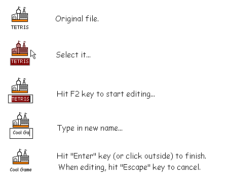

Here's a list of all the keyboard accelerators that may be used:
"Tabulator" key switches between list and tree view.The use of right mouse button is described elsewhere.Arrow keys are used to move the selection to a next item.
"Enter" key on a folder moves into the folder. Enter key on an application or document attempts to launch it into the default emulator.
"F3" function key is reserved for the Find command (not yet implemented).
"F4" function key opens the file type mappings dialog, and prefills the dialog with values of the selected item(s).
"F5" key is used to refresh. It reloads all the volume files and checks for floppies and CD's.
Alt-Enter opens the context sensitive popup menu, the same as the right mouse click.
Control-Enter when a folder is selected opens a new instance of HFVExplorer. This is not yet particularly useful, but will be when one can drop files between the programs.
To rename a file or folder, select it and hit the F2 (keyboard) key. Name locked items cannot be renamed without removing the lock first. Renaming a file goes like this:
Control-A (keyboard) key can be used to select all the files and folders. 
Control-X, Control-C and Control-V are used to cut, copy and paste.
Typing some letters from the beginning of a file name selects the file, if found.
The windows may be in different view modes.
There is one special button: ()
, the "up to previous folder" button. Double-clicking
this button, or hitting Enter moves you one level upwards in the
directory tree. Alternatively, the backspace key (keyboard) may
be used. The special button is not available in the Finder view mode (there
is no "good" place for it), but the backspace key can be used at any time.